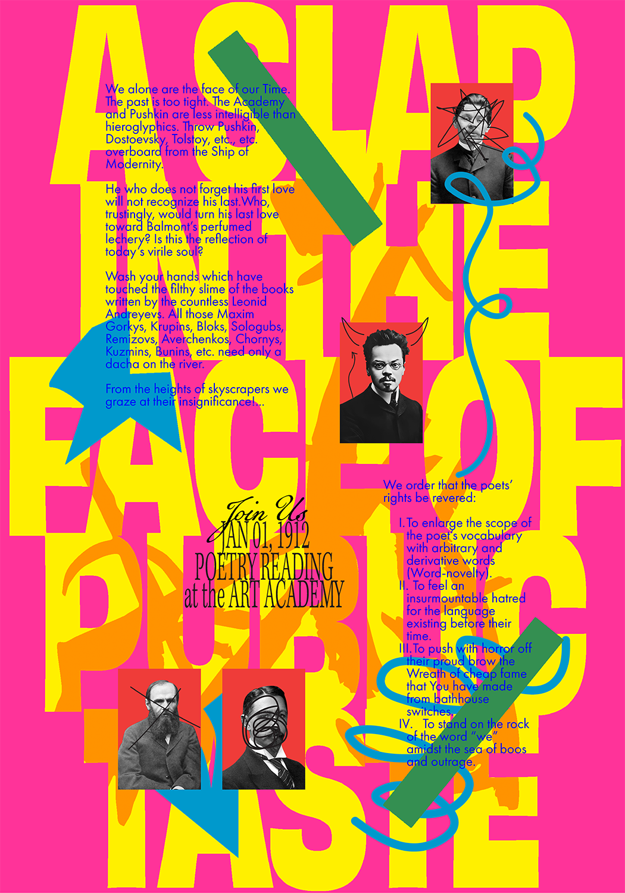

A poster design based on A Slap in the Face of Public Taste—a manifesto by Russian writers declaring the new age of poetry.
Made with the aim to learn how a message can be expressed through the use of type, imagery, colours, and composition. Combination of Russian constructivism art and my own style.
A Slap in the Face of Public Taste,
Core 1: Typography Studio
Digital Poster
2023
Core 1: Typography Studio
Digital Poster
2023
